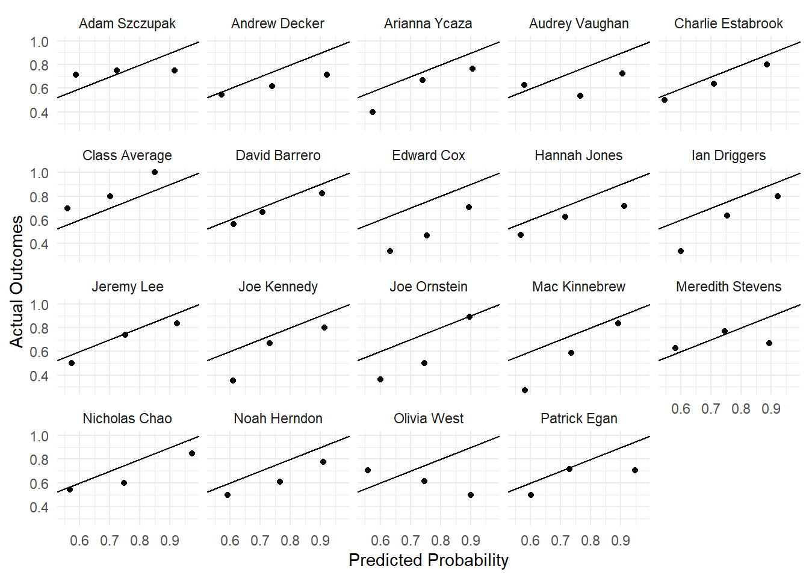

Fall 2022 Predictions
Week 1 (8/30)
Week 2 (9/7)
Week 3 (9/21)
Week 4 (9/28)
Week 5 (10/5)
Week 6 (10/12)
Week 7 (10/19)
Week 8 (10/26)
Week 9 (11/8)
Leaderboard
Note: Updated December 22, 2022.1
| Rank | Name | Correct Calls | Brier Score |
|---|---|---|---|
| 1 | Class Average | 30/39 | 0.1824 |
| 2 | Jeremy Lee | 27/39 | 0.1887 |
| 3 | David Barrero | 26/39 | 0.1959 |
| 4 | Joe Ornstein | 25/39 | 0.2124 |
| 5 | Nicholas Chao | 24/39 | 0.2166 |
| 6 | Adam Szczupak | 28/39 | 0.2170 |
| 7 | Arianna Ycaza | 24/39 | 0.2319 |
| 8 | Patrick Egan | 26/39 | 0.2332 |
| 9 | Hannah Jones | 22/39 | 0.2418 |
| 10 | Audrey Vaughan | 25/39 | 0.2452 |
| 11 | Andrew Decker | 22/39 | 0.2477 |
| 12 | Joe Kennedy | 22/39 | 0.2477 |
| 13 | Noah Herndon | 23/39 | 0.2490 |
| 14 | Meredith Stevens | 19/39 | 0.2903 |
| 15 | Olivia West | 16/39 | 0.3081 |
| 16 | Edward Cox | 20/39 | 0.3169 |
| 17 | Mac Kinnebrew | 17/39 | 0.3172 |
| 18 | Charlie Estabrook | 14/39 | 0.3776 |
| 19 | Ian Driggers | 14/39 | 0.4218 |
Calibration Plots

Footnotes
I had incorrectly resolved the Netanyahu question as “yes” following the November 1 Israeli elections, but he did not secure a coalition agreement to become Prime Minister by the November 30 deadline.↩︎